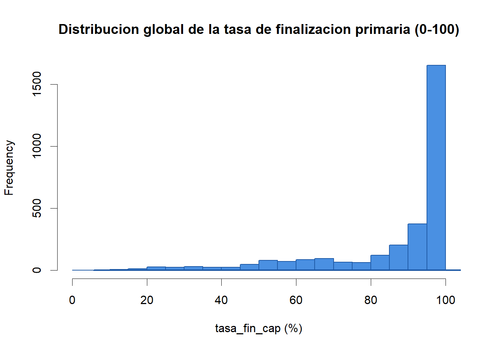
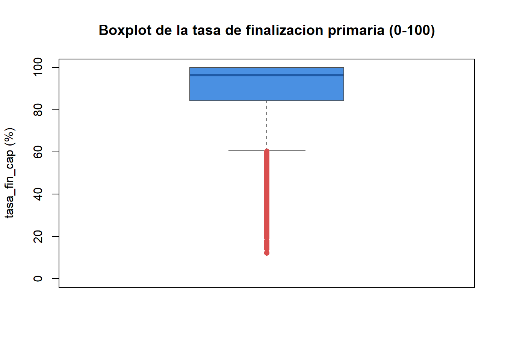
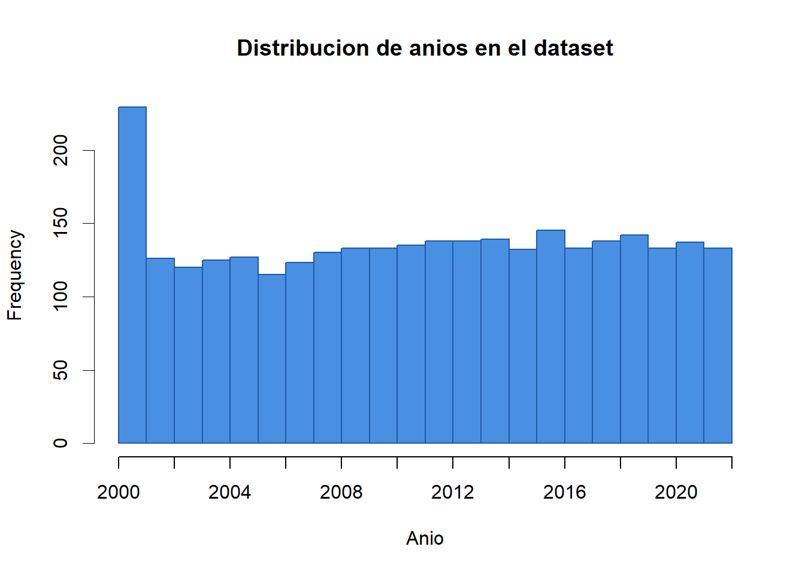
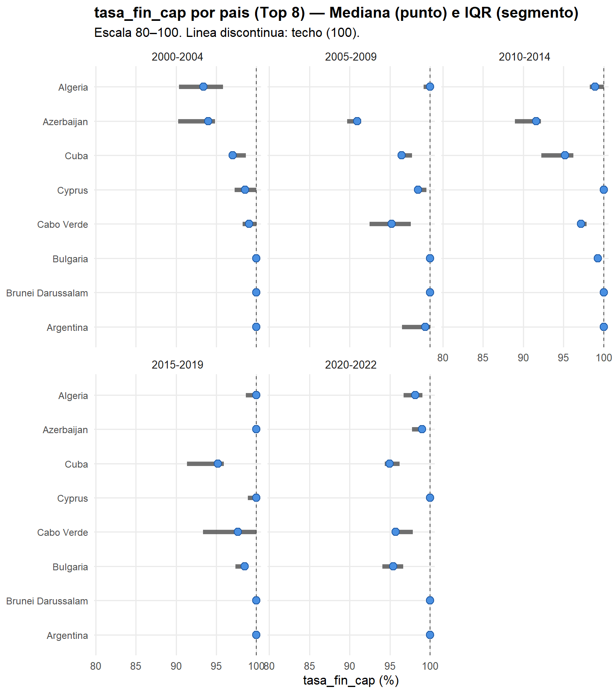
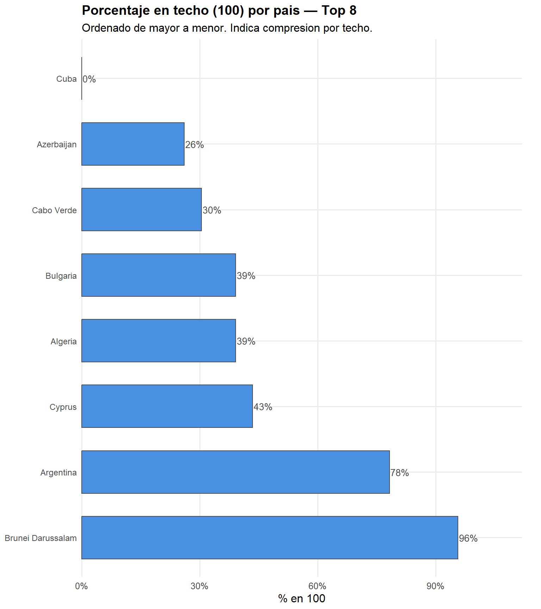
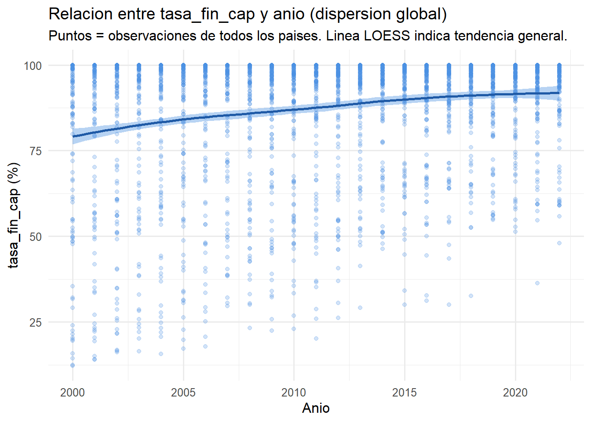
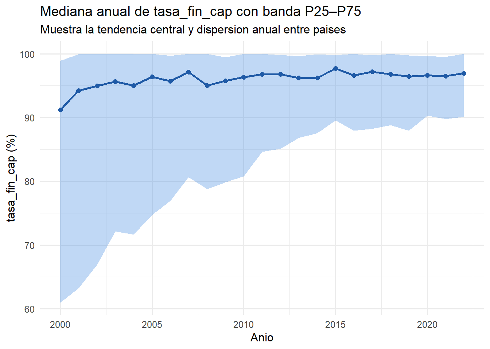
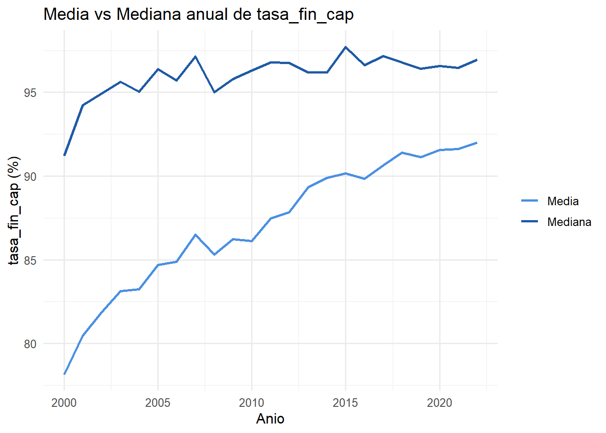
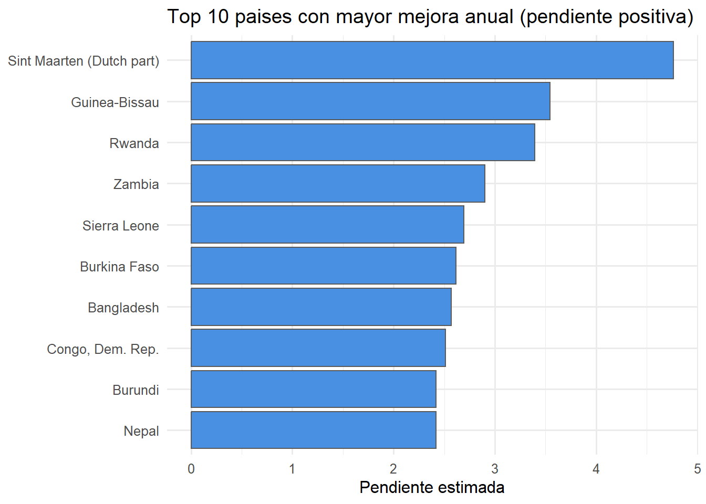
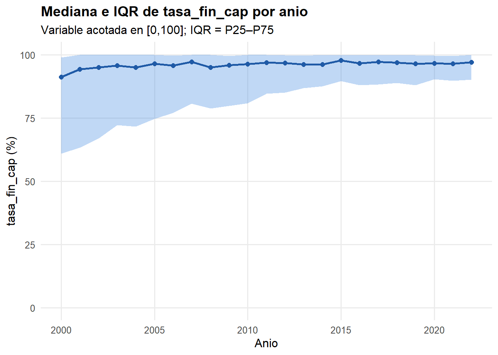

Chapter 2 Análisis exploratorio de datos
2.1 Análisis univariado
Empezando con la variable objetivo, queremos ver cuantos y cuales paises nos están dando integramente sus datos en la columna tasa_fin, puesto que observabamos que en el dataset no todos los paises brindaban sus datos integramente.
# --- Contar países con datos (2000–2022) y su cobertura ---
suppressPackageStartupMessages({
library(dplyr)
})
# 1) Detectar columnas de país y año según cómo las nombraste
cols <- names(df_2)
country_col <- if ("pais" %in% cols) "pais" else if ("country" %in% cols) "country" else
stop("No encuentro la columna de país. Esperaba 'pais' o 'country'.")
year_col <- if ("anio" %in% cols) "anio" else if ("year" %in% cols) "year" else
stop("No encuentro la columna de año. Esperaba 'anio' o 'year'.")
# 2) Definir el rango de años y filtrar estrictamente 2000–2022
years_target <- 2000:2022
n_years_target <- length(years_target)
df_win <- df_2 %>%
rename(pais = all_of(country_col),
anio = all_of(year_col)) %>%
mutate(anio = as.integer(anio)) %>%
filter(!is.na(pais), !is.na(anio),
anio %in% years_target)
# 3) Países únicos con al menos un dato en 2000–2022
n_paises_con_dato <- n_distinct(df_win$pais)
# 4) Cobertura por país: cuántos años reporta cada país en el rango
coverage_por_pais <- df_win %>%
distinct(pais, anio) %>%
count(pais, name = "n_anios") %>%
mutate(frac_cobertura = n_anios / n_years_target)
# 5) Países con cobertura completa (los 23 años)
n_paises_completos <- sum(coverage_por_pais$n_anios == n_years_target)
prop_paises_completos <- if (n_paises_con_dato > 0) n_paises_completos / n_paises_con_dato else NA_real_
# 6) Resumen de cobertura (años por país)
resumen_cobertura <- coverage_por_pais %>%
summarise(
paises_con_algun_dato = n(),
anios_min = min(n_anios, na.rm = TRUE),
anios_p25 = quantile(n_anios, 0.25, na.rm = TRUE),
anios_med = median(n_anios, na.rm = TRUE),
anios_p75 = quantile(n_anios, 0.75, na.rm = TRUE),
anios_max = max(n_anios, na.rm = TRUE)
)
# 7) Mostrar resultados clave
cat("Países con al menos un dato (2000–2022):", n_paises_con_dato, "\n")## Países con al menos un dato (2000–2022): 192cat("Países con cobertura completa (23 años):", n_paises_completos,
sprintf(" (%.1f%%)\n", 100 * prop_paises_completos))## Países con cobertura completa (23 años): 30 (15.6%)## paises_con_algun_dato anios_min anios_p25 anios_med anios_p75 anios_max
## 1 192 1 11 17 21 23En el período 2000–2022 contamos con datos de 192 países, pero la cobertura es heterogénea: solo 30 países (15,6%) reportan la serie completa de 23 años, mientras que el resto presenta huecos. En términos de extensión temporal por país, el mínimo es de 1 año, el p25 es 11, la mediana es 17, el p75 es 21 y el máximo es 23. Estos resultados confirman que trabajamos con un panel desbalanceado; por ello, los análisis temporales y las comparaciones entre países deben considerar esta asimetría de cobertura (p. ej., restringiendo periodos comunes, reportando el número efectivo de observaciones o aplicando estrategias robustas frente a datos faltantes) para evitar sesgos en la interpretación.
suppressPackageStartupMessages(library(dplyr))
# --- Detectar nombres de columnas ---
cols <- names(df_2)
country_col <- if ("pais" %in% cols) "pais" else if ("country" %in% cols) "country" else
stop("No encuentro la columna de país. Esperaba 'pais' o 'country'.")
year_col <- if ("anio" %in% cols) "anio" else if ("year" %in% cols) "year" else
stop("No encuentro la columna de año. Esperaba 'anio' o 'year'.")
target_col <- if ("tasa_fin" %in% cols) "tasa_fin" else if ("tasa_fin_prim_fem" %in% cols) "tasa_fin_prim_fem" else if ("SE.PRM.CMPT.FE.ZS" %in% cols) "SE.PRM.CMPT.FE.ZS" else
stop("No encuentro la columna de la variable objetivo. Esperaba 'tasa_fin', 'tasa_fin_prim_fem' o 'SE.PRM.CMPT.FE.ZS'.")
# --- Filtrar rango temporal y no-NA en la variable objetivo ---
df_win <- df_2 %>%
rename(pais = all_of(country_col), anio = all_of(year_col), tasa_fin = all_of(target_col)) %>%
mutate(anio = as.integer(anio)) %>%
filter(anio >= 2000, anio <= 2022, !is.na(tasa_fin))
# 1) Lista de países con al menos un porcentaje reportado (2000–2022)
paises_con_porcentaje <- sort(unique(df_win$pais))
# 2) (Útil) Conteo de años reportados por país en el rango
conteo_por_pais <- df_win %>%
distinct(pais, anio) %>%
count(pais, name = "n_anios_reportados") %>%
arrange(desc(n_anios_reportados), pais)
# --- Mostrar resultados ---
length(paises_con_porcentaje) # cuántos países## [1] 192## [1] "Afghanistan" "Albania" "Algeria"
## [4] "Andorra" "Angola" "Antigua and Barbuda"
## [7] "Argentina" "Armenia" "Aruba"
## [10] "Austria" "Azerbaijan" "Bahamas, The"
## [13] "Bahrain" "Bangladesh" "Barbados"
## [16] "Belarus" "Belize" "Benin"
## [19] "Bermuda" "Bhutan"## pais n_anios_reportados
## 1 Algeria 23
## 2 Argentina 23
## 3 Azerbaijan 23
## 4 Brunei Darussalam 23
## 5 Bulgaria 23
## 6 Cabo Verde 23
## 7 Cuba 23
## 8 Cyprus 23
## 9 Czechia 23
## 10 Estonia 23
## 11 Finland 23
## 12 Germany 23
## 13 Hungary 23
## 14 Iceland 23
## 15 Italy 23
## 16 Kazakhstan 23
## 17 Korea, Rep. 23
## 18 Kyrgyz Republic 23
## 19 Lao PDR 23
## 20 Latvia 23Antes de interpretar las distribuciones gráficas de las variables, es importante considerar una característica metodológica de los datos de WDI. La tasa de finalización primaria puede superar el 100% debido a la forma en que se calcula: el numerador contabiliza a todos los estudiantes que egresan del último grado de primaria, independientemente de su edad, mientras que el denominador corresponde únicamente a la población oficialmente asignada a ese nivel. La presencia de estudiantes en sobredad, subedad o con historial de repetición puede inflar el numerador, generando valores superiores al 100%. Por esta razón, identificamos y revisamos previamente las observaciones que exceden ese umbral y, para mejorar la claridad visual en los gráficos, trabajamos con una versión acotada de la variable en el rango 0–100, conservando la original para efectos de trazabilidad.
## Warning: package 'knitr' was built under R version 4.4.3# Resumen rápido
n_mayor_100 <- sum(df_2$tasa_fin > 100, na.rm = TRUE)
prop_mayor_100 <- round(mean(df_2$tasa_fin > 100, na.rm = TRUE) * 100, 2)
max_tasa <- max(df_2$tasa_fin, na.rm = TRUE)
cat("Observaciones > 100%:", n_mayor_100, "\n")## Observaciones > 100%: 750## Porcentaje del total: 24.97 %## Valor máximo observado: 168.18 %# Top casos > 100% (ordenados de mayor a menor)
top_mayor_100 <- df_2 %>%
filter(tasa_fin > 100) %>%
arrange(desc(tasa_fin)) %>%
select(pais, anio, tasa_fin) %>%
head(15)
kable(top_mayor_100, caption = "Principales observaciones con tasa de finalización > 100%")| pais | anio | tasa_fin |
|---|---|---|
| Monaco | 2016 | 168.1818 |
| Seychelles | 2021 | 167.0404 |
| Seychelles | 2017 | 155.3047 |
| St. Kitts and Nevis | 2021 | 150.3546 |
| Seychelles | 2019 | 140.8582 |
| Maldives | 2005 | 135.6577 |
| Turkiye | 2016 | 135.3401 |
| Seychelles | 2020 | 133.4992 |
| Belarus | 2002 | 132.8589 |
| Saudi Arabia | 2012 | 131.8461 |
| Turks and Caicos Islands | 2018 | 130.9524 |
| Seychelles | 2016 | 129.5026 |
| Seychelles | 2018 | 128.4734 |
| Maldives | 2006 | 126.8359 |
| Nauru | 2016 | 126.3158 |
El análisis univariado tiene como propósito examinar cada variable por separado con el fin de comprender su comportamiento general antes de integrar comparaciones entre países o estudiar su evolución temporal. En esta etapa se describen las características básicas de cada columna del dataset df_2, incluyendo medidas de tendencia central, dispersión, rangos, distribución y presencia de valores extremos. Dado que la tasa de finalización primaria puede presentar valores superiores al 100% debido a la metodología utilizada por WDI, y con el fin de mejorar la interpretación visual de las distribuciones, los gráficos correspondientes emplean una versión acotada de la variable objetivo en el intervalo 0–100. Esta decisión no altera los valores originales, que se conservan para su documentación, pero facilita la lectura de los resultados y evita que valores atípicos dominen la escala gráfica.
Dado que los datos corresponden a un panel desbalanceado —donde algunos países reportan más años que otros—, estos resultados deben interpretarse como una descripción global del conjunto y no como comparaciones estrictas entre unidades. Sin embargo, esta inspección preliminar permite identificar patrones fundamentales y garantizar que las transformaciones posteriores del EDA se realicen sobre una base sólida y coherentemente presentada, manteniendo consistencia entre la preparación de los datos y las visualizaciones que la acompañan.
## Warning: package 'tidyverse' was built under R version 4.4.3## Warning: package 'tibble' was built under R version 4.4.3## Warning: package 'lubridate' was built under R version 4.4.3## ── Attaching core tidyverse packages ──────────────────────── tidyverse 2.0.0 ──
## ✔ lubridate 1.9.4 ✔ tibble 3.2.1
## ── Conflicts ────────────────────────────────────────── tidyverse_conflicts() ──
## ✖ scales::col_factor() masks readr::col_factor()
## ✖ scales::discard() masks purrr::discard()
## ✖ dplyr::filter() masks stats::filter()
## ✖ dplyr::lag() masks stats::lag()
## ℹ Use the conflicted package (<http://conflicted.r-lib.org/>) to force all conflicts to become errorsazul_main <- "#4A90E2"
azul_borde <- "#1F5AA6"
gris_linea <- "#5A5A5A"
rojo_out <- "#D94E4E"
# ---- Paleta: azul principal + neutros + acento para outliers ----
azul_main <- "#4A90E2" # azul principal (rellenos/barras)
azul_fuerte <- "#1F5AA6" # azul mas oscuro (bordes/lineas destacadas)
gris_linea <- "#4D4D4D" # contornos/axes neutros
rojo_out <- "#D94E4E" # SOLO outliers (acento)
# Crear variable acotada para claridad visual
df_2 <- df_2 %>%
mutate(tasa_fin_cap = pmin(pmax(tasa_fin, 0), 100))
# 1) Resumen estadistico general de cada columna
summary(df_2)## pais anio tasa_fin tasa_fin_cap
## Length:3004 Min. :2000 Min. : 12.19 Min. : 12.19
## Class :character 1st Qu.:2006 1st Qu.: 84.20 1st Qu.: 84.20
## Mode :character Median :2012 Median : 96.28 Median : 96.28
## Mean :2011 Mean : 88.72 Mean : 87.32
## 3rd Qu.:2017 3rd Qu.:100.00 3rd Qu.:100.00
## Max. :2022 Max. :168.18 Max. :100.00## Min. 1st Qu. Median Mean 3rd Qu. Max.
## 12.19 84.20 96.28 87.32 100.00 100.00## 1% 25% 50% 75% 99%
## 22.41619 84.20383 96.28211 100.00000 100.00000# ---- Histograma + densidad ----
hist(df_2$tasa_fin_cap,
breaks = seq(0, 100, by = 5), # bins uniformes, legibles
col = azul_main,
border = azul_fuerte, # BORDES para distinguir barras
lwd = 0.8, # grosor del borde
main = "Distribucion global de la tasa de finalizacion primaria (0-100)",
xlab = "tasa_fin_cap (%)",
xlim = c(0, 100))
lines(density(df_2$tasa_fin_cap), col = azul_fuerte, lwd = 2)
# ---- Boxplot (relleno azul; outliers resaltados; lineas neutras) ----
boxplot(df_2$tasa_fin_cap,
col = azul_main,
border = gris_linea,
whiskcol = gris_linea,
staplecol= gris_linea,
medcol = azul_fuerte, # mediana en azul fuerte
outcol = rojo_out, outpch = 16, # SOLO outliers con acento
main = "Boxplot de la tasa de finalizacion primaria (0-100)",
ylab = "tasa_fin_cap (%)",
ylim = c(0, 100))
## Min. 1st Qu. Median Mean 3rd Qu. Max.
## 2000 2006 2012 2011 2017 2022## [1] 2000 2022# Histograma de anio: UNA barra por anio y borde visible
hist(df_2$anio,
breaks = seq(2000, 2022, by = 1), # una barra por anio
col = azul_main,
border = azul_fuerte, # BORDES para separar barras
lwd = 0.8,
main = "Distribucion de anios en el dataset",
xlab = "Anio",
xaxt = "n") # eje X manual para mejor legibilidad
axis(side = 1, at = seq(2000, 2022, by = 2), labels = seq(2000, 2022, by = 2))
# 4) Analisis univariado de la columna 'pais'
# Cantidad de paises distintos
length(unique(df_2$pais))## [1] 192# Frecuencia por pais (cuantas observaciones tiene cada uno)
tabla_paises <- table(df_2$pais)
head(tabla_paises)##
## Afghanistan Albania Algeria Andorra
## 4 18 23 11
## Angola Antigua and Barbuda
## 5 12##
## Canada Korea, Dem. People's Rep. Monaco
## 1 1 1
## South Sudan Gabon Guinea-Bissau
## 1 2 2
## Puerto Rico (US) Sint Maarten (Dutch part) Iraq
## 2 2 3
## Afghanistan
## 4##
## Lebanon Lithuania Madagascar Malta Mexico
## 23 23 23 23 23
## Morocco Norway Slovak Republic Sweden Switzerland
## 23 23 23 23 23La inspección univariada del conjunto de datos revela tres patrones fundamentales. En primer lugar, la distribución de los años muestra que el período 2000–2022 está completamente cubierto, aunque la frecuencia de observaciones varía ligeramente entre años, reflejando la estructura desbalanceada del panel: algunos países aportan información de forma continua mientras otros presentan registros intermitentes. En segundo lugar, el boxplot de la tasa de finalización primaria (acotada al rango 0–100) evidencia que los valores se concentran en niveles altos, con una mediana cercana al 100%, pero también muestra una presencia notable de valores bajos y atípicos, indicando diferencias sustanciales en el desempeño educativo entre países. Finalmente, el histograma confirma visualmente este patrón: la distribución global es marcadamente asimétrica, con una fuerte acumulación de observaciones en torno a tasas elevadas y una cola hacia valores más bajos, lo que sugiere que, mientras muchos países alcanzan niveles altos de finalización primaria, un grupo significativo aún presenta rezagos importantes.
2.2 Análisis bivariado
Antes de iniciar el análisis bivariado, dejamos constancia de que trabajaremos con la versión acotada de la variable objetivo (tasa_fin_cap ∈ [0,100]) para asegurar visualizaciones comparables y evitar que pocos valores extremos (>100%) distorsionen escalas y patrones; la variable original (tasa_fin) se conserva y, cuando sea pertinente (p. ej., para verificar robustez), contrastaremos resultados con ella. Dado que el panel es desbalanceado (cobertura desigual por país y año), en cada contraste reportaremos el número efectivo de observaciones y el rango temporal involucrado. Asimismo, al explorar asociaciones emplearemos medidas y gráficos robustos a asimetrías y acotamientos (p. ej., correlación de Spearman además de Pearson, y bandas intercuartílicas), dejando claro que las conclusiones se interpretan condicionadas al recorte a [0,100]. Esta decisión metodológica mejora la legibilidad y la coherencia del EDA, sin renunciar a la trazabilidad de la fuente original.
2.2.1 Numérica vs Categórica
# ============================================================
# Bivariado CLARO: numerica (tasa_fin_cap) vs categorica (pais)
# Fig A: Lollipop-IQR por pais y quinquenio (zoom 80-100)
# Fig B: % en techo (100) por pais (Top 8)
# Sugerencia de chunk Rmd: {r, fig.width=11, fig.height=9}
# ============================================================
suppressPackageStartupMessages({
library(dplyr); library(ggplot2); library(forcats)
library(stringr); library(scales)
})
# ---------- Paleta (la tuya) ----------
azul_main <- "#4A90E2" # principal
azul_borde <- "#1F5AA6" # acento
gris_linea <- "#4D4D4D" # neutro
rojo_out <- "#D94E4E" # acento (techo/outliers)
# ---------- 1) Asegurar variable acotada ----------
if (!"tasa_fin_cap" %in% names(df_2)) {
df_2 <- df_2 %>% mutate(tasa_fin_cap = pmin(pmax(tasa_fin, 0), 100))
}
# ---------- 2) Base 2000–2022 + quinquenios ----------
df_base <- df_2 %>%
filter(!is.na(pais), !is.na(anio), !is.na(tasa_fin_cap),
anio >= 2000, anio <= 2022) %>%
mutate(
quinquenio = case_when(
anio <= 2004 ~ "2000-2004",
anio <= 2009 ~ "2005-2009",
anio <= 2014 ~ "2010-2014",
anio <= 2019 ~ "2015-2019",
TRUE ~ "2020-2022"
),
quinquenio = factor(
quinquenio,
levels = c("2000-2004","2005-2009","2010-2014","2015-2019","2020-2022")
)
)
# ---------- 3) Top paises por cobertura ----------
N_TOP <- 8 # <= CLARIDAD. Si quieres 10, cambia a 10.
cov_por_pais <- df_base %>%
distinct(pais, anio) %>% count(pais, name = "n_anios") %>% arrange(desc(n_anios))
paises_top <- cov_por_pais %>% slice(1:N_TOP) %>% pull(pais)
df_top <- df_base %>%
filter(pais %in% paises_top) %>%
left_join(cov_por_pais, by = "pais") %>%
mutate(pais_lab = str_wrap(pais, width = 18))
# ---------- 4) Resumen por pais y quinquenio ----------
res_q <- df_top %>%
group_by(quinquenio, pais_lab) %>%
summarise(
n = n(),
med = median(tasa_fin_cap, na.rm = TRUE),
p25 = quantile(tasa_fin_cap, 0.25, na.rm = TRUE),
p75 = quantile(tasa_fin_cap, 0.75, na.rm = TRUE),
pctcap = mean(tasa_fin_cap >= 100 - 1e-9),
.groups = "drop"
)
# Para que dentro de CADA quinquenio queden ordenados por mediana (lectura natural)
res_q <- res_q %>%
group_by(quinquenio) %>%
mutate(pais_ord = fct_reorder(pais_lab, med, .desc = TRUE)) %>%
ungroup()
# ============================================================
# FIG A — Lollipop-IQR por pais y quinquenio (zoom 80–100)
# - linea horizontal: IQR (P25–P75)
# - punto: mediana
# - referencia discontinua en 100 (techo)
# ============================================================
p_lollipop <- ggplot(res_q, aes(x = pais_ord)) +
geom_hline(yintercept = 100, linetype = "dashed",
color = gris_linea, linewidth = 0.5) +
geom_segment(aes(xend = pais_ord, y = p25, yend = p75),
color = gris_linea, linewidth = 2, alpha = 0.8) +
geom_point(aes(y = med),
color = azul_borde, fill = azul_main,
size = 3.2, shape = 21, stroke = 0.6) +
coord_flip() +
facet_wrap(~ quinquenio, ncol = 3) +
labs(
title = "tasa_fin_cap por pais (Top 8) — Mediana (punto) e IQR (segmento)",
subtitle = "Escala 80–100. Linea discontinua: techo (100).",
x = NULL, y = "tasa_fin_cap (%)"
) +
scale_y_continuous(limits = c(80, 100),
breaks = seq(80, 100, 5),
expand = expansion(mult = c(0.01, 0.03))) +
theme_minimal(base_size = 12) +
theme(
plot.title = element_text(face = "bold"),
axis.text.y = element_text(size = 9, lineheight = 0.9),
panel.grid.minor = element_blank(),
strip.text = element_text(size = 10)
)
print(p_lollipop)
# ============================================================
# FIG B — % en techo (100) por pais (Top 8, agregado)
# ============================================================
res_cap <- df_top %>%
group_by(pais_lab) %>%
summarise(pct_cap = mean(tasa_fin_cap >= 100 - 1e-9),
.groups = "drop") %>%
mutate(pais_ord = fct_reorder(pais_lab, pct_cap, .desc = TRUE))
p_cap <- ggplot(res_cap, aes(x = pais_ord, y = pct_cap)) +
geom_col(fill = azul_main, color = gris_linea, width = 0.65) +
geom_text(aes(label = percent(pct_cap, accuracy = 1)),
hjust = -0.05, size = 3.5, color = gris_linea) +
coord_flip(clip = "off") +
labs(
title = "Porcentaje en techo (100) por pais — Top 8",
subtitle = "Ordenado de mayor a menor. Indica compresion por techo.",
x = NULL, y = "% en 100"
) +
scale_y_continuous(labels = percent_format(accuracy = 1),
limits = c(0, 1),
expand = expansion(mult = c(0, 0.12))) +
theme_minimal(base_size = 12) +
theme(
plot.title = element_text(face = "bold"),
panel.grid.minor = element_blank(),
axis.text.y = element_text(size = 9, lineheight = 0.9),
plot.margin = margin(t = 5, r = 20, b = 5, l = 5)
)
print(p_cap)
En los Top 8 países, el gráfico de % en techo (100) muestra una compresión fuerte en Brunei Darussalam (96%) y Argentina (78%), moderada en Cyprus (43%), Argelia y Bulgaria (≈39%), Cabo Verde (30%) y Azerbaiyán (26%), y prácticamente nula en Cuba (0%); por tanto, en los lollipop‑IQR por quinquenio las diferencias deben leerse con cautela cuando la mediana está pegada a 100 y el IQR es mínimo (la escala está saturada). Aun así, se aprecian trayectorias: Azerbaiyán y Cabo Verde muestran alzas graduales y reducción de dispersión a lo largo de los quinquenios; Cuba se mantiene alta pero sin tocar techo, lo que permite distinguir cambios reales; Brunei y Argentina se saturan temprano y permanecen muy cerca del 100 con IQRs pequeños en los periodos recientes; Bulgaria y Cyprus se sitúan sistemáticamente altos con variabilidad baja‑moderada. En conjunto, los países convergen hacia valores elevados (IQRs más cortos en los quinquenios finales), pero el efecto techo limita la comparación fina entre los que alcanzan 100 con frecuencia.2.2.2 Numérica vs Numérica
# ===== Variable numerica vs numerica =====
library(dplyr)
library(ggplot2)
# Paleta
azul_main <- "#4A90E2"
azul_borde <- "#1F5AA6"
gris_linea <- "#5A5A5A"
rojo_out <- "#D94E4E"
# Asegurar variable acotada
if (!"tasa_fin_cap" %in% names(df_2)) {
df_2 <- df_2 %>% mutate(tasa_fin_cap = pmin(pmax(tasa_fin,0),100))
}
df_num <- df_2 %>%
filter(!is.na(tasa_fin_cap), !is.na(anio),
anio >= 2000, anio <= 2022)
# ==============================================================
# (A) DISPERSION GLOBAL + LOESS
# ==============================================================
p_disp <- ggplot(df_num, aes(x = anio, y = tasa_fin_cap)) +
geom_point(alpha = 0.25, color = azul_main) +
geom_smooth(method = "loess", se = TRUE, color = azul_borde, fill = scales::alpha(azul_main,0.3)) +
labs(
title = "Relacion entre tasa_fin_cap y anio (dispersion global)",
x = "Anio", y = "tasa_fin_cap (%)",
subtitle = "Puntos = observaciones de todos los paises. Linea LOESS indica tendencia general."
) +
theme_minimal(base_size = 12)
print(p_disp)## `geom_smooth()` using formula = 'y ~ x'
# ==============================================================
# (B) MEDIANA ANUAL + BANDA INTERCUARTILICA
# ==============================================================
df_agg <- df_num %>%
group_by(anio) %>%
summarise(
mediana = median(tasa_fin_cap),
p25 = quantile(tasa_fin_cap, 0.25),
p75 = quantile(tasa_fin_cap, 0.75),
n_paises = n_distinct(pais),
.groups = "drop"
)
p_mediana <- ggplot(df_agg, aes(x = anio, y = mediana)) +
geom_ribbon(aes(ymin = p25, ymax = p75),
fill = scales::alpha(azul_main, 0.35)) +
geom_line(color = azul_borde, linewidth = 1) +
geom_point(color = azul_borde, size = 2) +
labs(
title = "Mediana anual de tasa_fin_cap con banda P25–P75",
subtitle = "Muestra la tendencia central y dispersion anual entre paises",
x = "Anio", y = "tasa_fin_cap (%)"
) +
theme_minimal(base_size = 12)
print(p_mediana)
# ==============================================================
# (C) MEDIA vs MEDIANA ANUAL
# ==============================================================
df_media <- df_num %>%
group_by(anio) %>%
summarise(
media = mean(tasa_fin_cap),
mediana = median(tasa_fin_cap),
.groups = "drop"
)
p_mean_med <- ggplot(df_media, aes(x = anio)) +
geom_line(aes(y = media, color = "Media"), linewidth = 1) +
geom_line(aes(y = mediana, color = "Mediana"), linewidth = 1) +
scale_color_manual(values = c("Media" = azul_main, "Mediana" = azul_borde)) +
labs(
title = "Media vs Mediana anual de tasa_fin_cap",
x = "Anio", y = "tasa_fin_cap (%)", color = NULL
) +
theme_minimal(base_size = 12)
print(p_mean_med)
# ==============================================================
# (D) PENDIENTE POR PAIS (MEJORA/DETERIORO)
# ==============================================================
df_slope <- df_num %>%
group_by(pais) %>%
do({
mod <- lm(tasa_fin_cap ~ anio, data = .)
tibble(pendiente = coef(mod)[["anio"]])
}) %>%
ungroup()
df_slope_top <- df_slope %>% arrange(desc(pendiente)) %>% slice(1:10)
df_slope_bottom <- df_slope %>% arrange(pendiente) %>% slice(1:10)
p_slopes <- ggplot(df_slope_top, aes(x = reorder(pais, pendiente), y = pendiente)) +
geom_col(fill = azul_main, color = gris_linea) +
coord_flip() +
labs(
title = "Top 10 paises con mayor mejora anual (pendiente positiva)",
x = NULL, y = "Pendiente estimada"
) +
theme_minimal(base_size = 12)
print(p_slopes)
#### Tendencia global (dispersión + LOESS): La relación entre tasa_fin_cap y anio muestra una tendencia ascendente a lo largo de 2000–2022. El incremento es más pronunciado al inicio y luego se suaviza, con un leve aplanamiento en los años finales. La nube conserva heterogeneidad vertical en todo el periodo, evidencia de diferencias persistentes entre países. #### Mediana anual y dispersión (P25–P75). La mediana anual se mantiene alta y creciente, lo que sugiere progreso sostenido. La banda intercuartílica (P25–P75) se desplaza hacia arriba y parece estrecharse ligeramente, indicando menor dispersión entre países y una convergencia parcial hacia niveles elevados de finalización. #### Media vs. mediana anual. La mediana está sistemáticamente por encima de la media, lo que confirma asimetría hacia valores bajos (hay países con años de desempeño bajo que “arrastran” la media). La brecha media–mediana disminuye gradualmente, compatible con la idea de que los rezagados mejoran y la distribución se vuelve menos sesgada. #### Pendiente por país (mejoras anuales). El ranking de pendientes positivas señala a varios países con mejoras anuales marcadas. Esto es coherente con dinámicas de “catch‑up”: quienes partían de niveles más bajos muestran avances más rápidos. Conviene interpretar el ranking con cautela, pues la pendiente depende de la cobertura temporal efectiva y del techo impuesto por la acotación a [0,100].2.3 Análisis multivariado
suppressPackageStartupMessages({
library(dplyr)
library(ggplot2)
library(scales)
library(tibble)
})
# Paleta (misma que venias usando)
azul_main <- "#4A90E2"
azul_borde <- "#1F5AA6"
gris_linea <- "#5A5A5A"
rojo_out <- "#D94E4E"
# --- 0) Asegurar variable acotada en [0,100] ---
if (!"tasa_fin_cap" %in% names(df_2)) {
df_2 <- df_2 %>%
mutate(tasa_fin_cap = pmin(pmax(tasa_fin, 0), 100))
}
# --- 1) Base multivariada coherente con el EDA ---
df_mv <- df_2 %>%
filter(!is.na(pais), !is.na(anio), !is.na(tasa_fin_cap),
anio >= 2000, anio <= 2022)
# --- 2) Mediana e IQR por anio (usando la variable acotada) ---
dist_year <- df_mv %>%
group_by(anio) %>%
summarise(
med = median(tasa_fin_cap, na.rm = TRUE),
p25 = quantile(tasa_fin_cap, 0.25, na.rm = TRUE),
p75 = quantile(tasa_fin_cap, 0.75, na.rm = TRUE),
n = n(), # util para referencia
.groups = "drop"
)
ggplot(dist_year, aes(x = anio, y = med)) +
geom_ribbon(aes(ymin = p25, ymax = p75),
fill = alpha(azul_main, 0.35)) +
geom_line(color = azul_borde, linewidth = 1) +
geom_point(color = azul_borde, size = 2) +
labs(
title = "Mediana e IQR de tasa_fin_cap por anio",
subtitle = "Variable acotada en [0,100]; IQR = P25–P75",
x = "Anio", y = "tasa_fin_cap (%)"
) +
scale_y_continuous(limits = c(0, 100)) +
theme_minimal(base_size = 12) +
theme(plot.title = element_text(face = "bold"),
panel.grid.minor = element_blank())
# --- 3) Pendiente por pais ANTES de tocar el techo ---
# Regla:
# - Si el pais toca 100 en algun anio, usamos datos con anio < primer anio en techo.
# - Si nunca toca 100, usamos toda su serie.
# - Exigimos al menos 2 puntos para estimar pendiente.
slopes <- df_mv %>%
group_by(pais) %>%
arrange(anio, .by_group = TRUE) %>%
mutate(capped = tasa_fin_cap >= 100 - 1e-9) %>%
mutate(first_cap_year = ifelse(any(capped), min(anio[capped]), Inf)) %>%
# conservar todo si nunca capea; si capea, solo antes del primer techo
filter(anio < first_cap_year | is.infinite(first_cap_year)) %>%
# asegurar al menos 2 puntos por pais
mutate(n_pts = n()) %>%
filter(n_pts >= 2) %>%
do({
fit <- lm(tasa_fin_cap ~ anio, data = .)
tibble(
pendiente = unname(coef(fit)[["anio"]]),
n_usados = nrow(.)
)
}) %>%
ungroup() %>%
arrange(desc(pendiente))
# Top paises por pendiente (mejora anual antes del techo)
head(slopes, 10)## # A tibble: 10 × 3
## pais pendiente n_usados
## <chr> <dbl> <int>
## 1 Azerbaijan 8.48 2
## 2 Turks and Caicos Islands 7.07 2
## 3 Mongolia 6.31 2
## 4 Bhutan 4.64 5
## 5 Tajikistan 3.82 2
## 6 China 3.81 2
## 7 Zambia 3.75 8
## 8 Algeria 3.70 5
## 9 Guinea-Bissau 3.54 2
## 10 Syrian Arab Republic 3.51 5En los incrementos estimados, Azerbaiyán destaca con el mayor avance (≈8.48), seguido por Argelia (≈3.70) y Lao PDR (≈2.81); a nivel regional, South Asia ronda ≈2.34, mientras Marruecos (≈1.98) y Chipre (≈1.31) muestran mejoras más modestas, similares a los promedios de LDC/UN (≈1.45) y HIPC (≈1.42). En conjunto, la mediana anual de tasa_fin_cap sube rápido a inicios de los 2000 y se estabiliza cerca de 95, con IQR decreciente (menos dispersión entre países). Paralelamente, el porcentaje en el techo (100) se mantiene alto (≈17–23%) y repunta al final (≈24%), confirmando un efecto techo creciente que comprime la variabilidad y puede exagerar la convergencia observada.